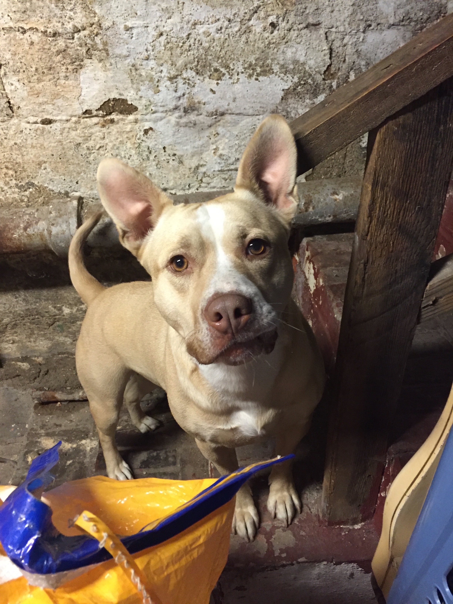
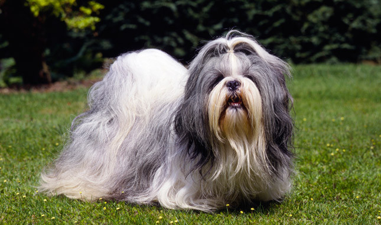

This is Kazier she is an American Pitbull mix. She is primarily available Monday through Thursdays from 7am to 4pm.

This is Herb he is a pure shih tzu and extremely friendly to strangers. He is primarily available from 6pm to 12am every other Tuesday.
This is an abyssinian cat she is extremely shy but lovable. She is available from 3pm to 9am on Sundays and Wednesdays.

This is a german sheppard, he likes long walks, and being petted. He is available from 1am to 8pm on Thursdays and Fridays.

This is a Husky, he is scared of spiders and likes people, he is available from 2am to 3pm on Saturdays and Sundays.

This is a beagle likes laying on paper, he is available from 2pm to 6pm Friday on Saturdays.
This is an American Bobtail. He has been known to easily become hostile as well as maintain a hyper active personality. Is available all day every Sunday.